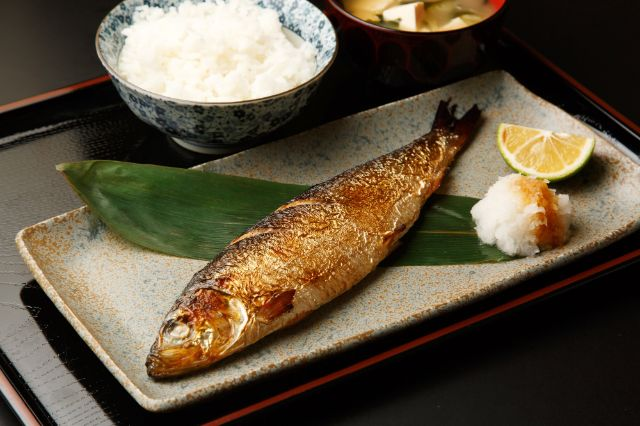
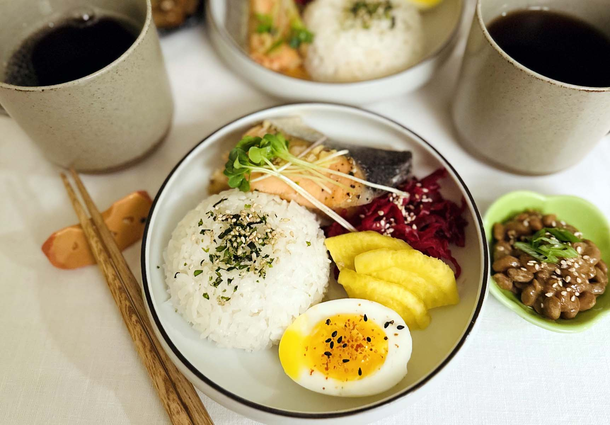

Japanese Vegetarian
Five week course in London
A five week intro to traditional Japanese Vegetarian meals, teaching you a selection of rice and noodle dishes.
Date and time for next course: PLACEHOLDER
A five week intro to traditional Japanese Vegetarian meals, teaching you a selection of rice and noodle dishes.
Date and time for next course: PLACEHOLDER

An intense one-day course looking at how to create the most delicious sauces for use in range of Japanese cookery.
Date and time for next course: PLACEHOLDER

A two month intense course to become master in cooking fish like a masterchef.
Date and time for next course: PLACEHOLDER

An two day course to learn how to make basic breakfast like a pro.
Date and time for next course: PLACEHOLDER